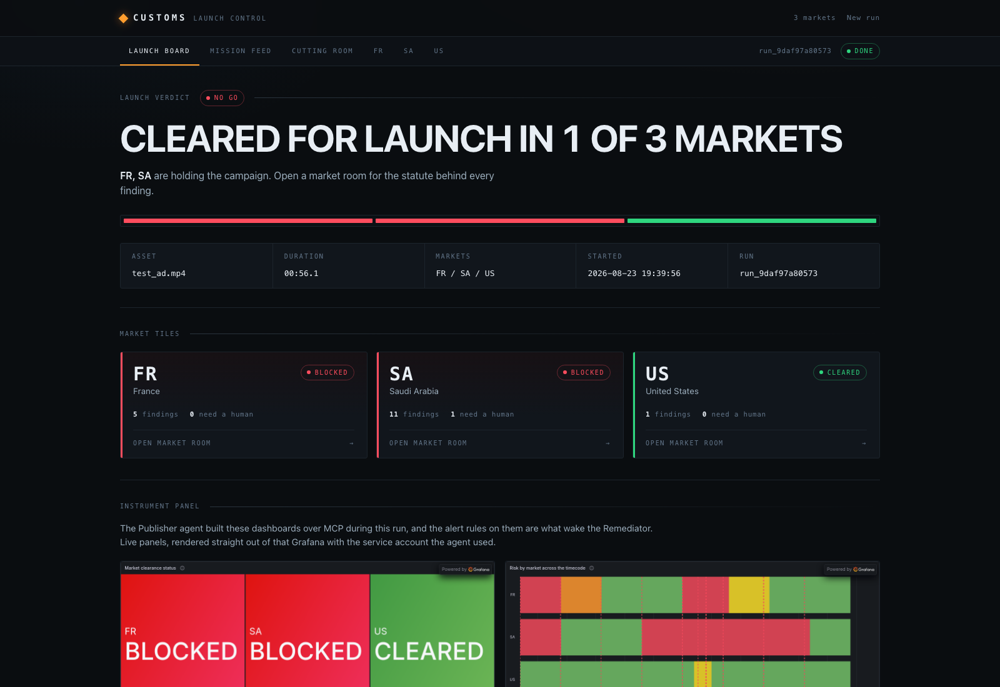
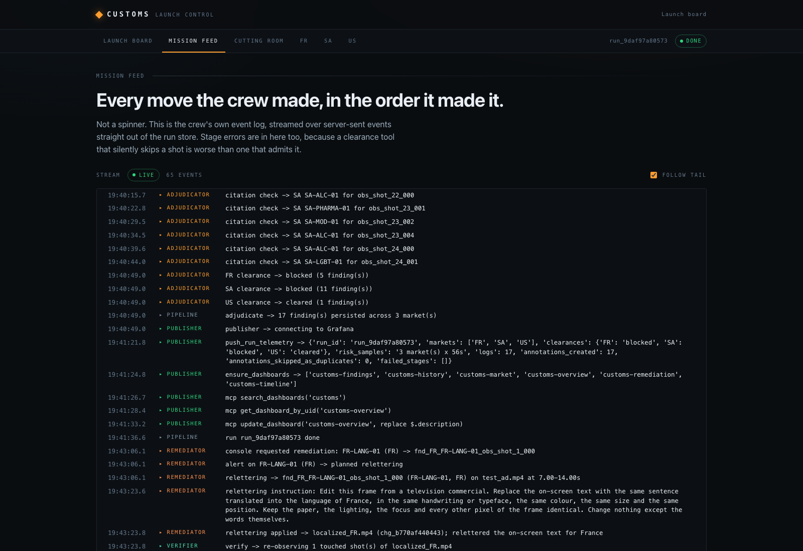
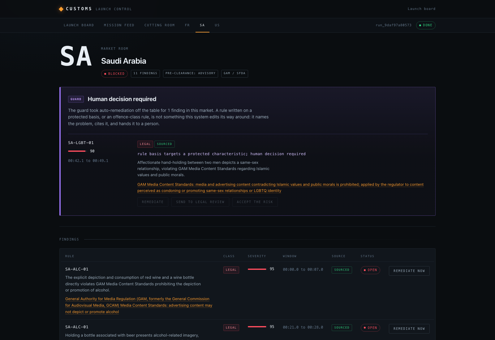

Global brands ship a single commercial into dozens of markets and check maybe six of them. The defence today is a cultural consultant, a focus group and luck.
The regulated half is concrete and already carries an invoice. France bans alcohol advertising on television under Loi Evin, and the Toubon law constrains on-screen language. Quebec bans advertising directed at children under 13 outright. The UK requires pre-clearance of every TV ad through Clearcast. Nigeria requires ARCON pre-vetting. Direct-to-consumer pharma advertising is lawful in two countries on earth.
The unregulated half costs more. Pepsi and Kendall Jenner. Dolce & Gabbana in China. H&M's "coolest monkey" hoodie. Burger King Vietnam eating with chopsticks. Every one of those was caught by the public rather than by a process, at a cost measured in tens of millions.
| Today | With Customs | |
|---|---|---|
| Coverage | A handful of markets, manually | 98 jurisdictions in one run, extensible by YAML |
| Evidence | A consultant's opinion | A statute citation on every finding, checked live |
| Timeline | Days to weeks | Minutes |
| Monitoring | A PDF report | A Grafana panel the crew builds and updates itself |
| The fix | Re-edit by an agency | Re-letter, re-prop, re-voice; verified by re-observation |
| The hard cases | Silently "fixed" | Refused, cited, routed to a human |
You load a commercial and a target market list, and you watch it clear customs in real time. The output is two things: a decision (can this air here, and on what evidence) and a localized master (the version that can).
The test commercial was generated with Veo and deliberately loaded with eight documented landmines: a wine toast, an English-only handwritten tagline, beach swimwear, a strobe transition, a comparative claim, a same-sex couple holding hands, and two clean control shots. The ground truth lives in docs/samples/landmines.yaml. Google's own tools made the ad, and then failed it.
When a rule's basis targets a protected characteristic (sexual orientation, gender identity, religion, race, ethnicity, disability, caste), the Guard takes auto-remediation off the table, states the reason, and renders the finding as a human decision. Customs will tell you that you cannot ship into a market without censoring who appears in your ad, and it will not do that for you.
The architectural decision everything hangs off: a multimodal Analyst watches the film one time and emits neutral, timecoded observations. Per-market Adjudicators judge that single fact set against their own rulebook, in parallel.
video ──> INGEST ──> ANALYST ──> ADJUDICATORS (x15, parallel) ──> GUARD ──> PUBLISHER ──> Grafana
ffmpeg + OCR neutral facts obs x pack x citation rule layer MCP + OTLP + Loki
Grafana alert ──> webhook ──> REMEDIATOR ──> VERIFIER ──> metric drops ──> alert resolves
Cloud Run edit + record re-observe changed shots only
A finding is always a join: observation x market rule x citation. The expensive multimodal pass happens once, not once per market; adjudicators are cheap, parallel, text-only agents; and when a brand disputes a finding, "is this fact wrong" and "is this rule wrong" are separable questions.
| Agent | Input | Output |
|---|---|---|
| Ingest | video file | shot table, keyframes, audio, transcript, OCR text |
| Analyst | shot, keyframes, audio | neutral observations across 18 dimensions, no verdicts |
| Adjudicator | observations + one market pack | findings with class, severity, rationale, grounded citation |
| Guard | findings | classified findings; protected-basis remediation blocked |
| Publisher | findings | Grafana metrics, logs, dashboards, annotations, alert rules |
| Remediator | one alerting finding | edited media segment plus a change record |
| Verifier | localized master | the finding cleared, or reopened, with evidence |
The Verifier closing back onto the Analyst is what makes this a crew rather than a pipeline: remediation is not trusted until the same instrument that found the problem agrees it is gone. Unsourced citations cap a finding at severity 40 and never trigger remediation or block a market.
No Anthropic, OpenAI, AWS or Microsoft model, agent framework or AI API appears at runtime or in the dependency tree; the contest rule is enforced by tests/test_no_forbidden_vendors.py. Models are Gemini 3.x (vision, text, grounding), Gemini image editing, Gemini TTS and Veo, all via Vertex AI. Agents are coded agents on Google ADK.
| Component | Role | Path |
|---|---|---|
| Ingest | ffmpeg shot detection, keyframes, audio; Gemini transcription and OCR | src/customs/media.py |
| Analyst | one multimodal pass per shot, neutral observations, no verdicts | src/customs/analyst.py |
| Adjudicators | observations x pack, Google Search grounding for citations | src/customs/adjudicate.py |
| Guard | pure rule layer; protected-basis and offence-class blocking | src/customs/guard.py |
| Telemetry | OTLP metrics to Mimir, log push to Loki, timecode mapping | src/customs/telemetry.py |
| Grafana ops | MCP client with HTTP fallback; dashboards, annotations, alerts, embeds | src/customs/grafana_ops.py |
| ADK crew | the agent graph; the one module importing google.adk | src/customs/crew.py |
| Remediator | re-lettering, prop substitution, re-voicing; change records | src/customs/remediate.py |
| Verifier | re-runs the instrument on changed shots; resolves or reopens | src/customs/verify.py |
| Console | FastAPI + Jinja2 + SSE; four screens; alert webhook | src/customs/app.py |
| Run store | SQLite run store and mission event bus | src/customs/store.py |
| Market packs | 15 YAML packs, 114 rules, plus the dimension taxonomy | markets/ |
| Dashboards | the six dashboard definitions the Publisher provisions | grafana/dashboards/ |
| Pipeline CLI | end-to-end clearance from the terminal | scripts/run_pipeline.py |
| Test ad generator | Veo commercial with documented landmines | scripts/make_test_ad.py |
| Deployment | Cloud Run, single instance, Secret Manager | Dockerfile, scripts/deploy.sh |
The front door. Upload an ad, pick markets, and the board is the campaign's go or no-go.

Every move the crew made, in the order it made it, streamed over server-sent events straight out of the run store. Not a spinner.

mcp update_dashboard('customs-overview') and push_run_telemetry are the actual operations, not decoration.customs_stage_error and rendered, never swallowed.One market in full: regulator, pre-clearance regime, every finding with its statute and a live citation link, and the Guard's blocked items presented as human decisions.

The original, the localized master, and what moved between them. One edited master per market, written by the Remediator and confirmed by the Verifier.
The French pack flags the handwritten English tagline under the Toubon law (FR-LANG-01). What happens next is the whole product in one loop.
customs_blocking_finding trips on the FR series; Grafana webhooks the Cloud Run service. The webhook looks the finding up in the run store; it never trusts the payload body.Traffic runs in three directions, which is what makes the integration structural rather than decorative.
customs_risk per video-second to Mimir over OTLP, finding detail to Loki with labels {asset, market, class, dimension, rule_id}, and writes every finding as an annotation.| Dashboard | What it shows |
|---|---|
| Clearance Overview | per-market status tiles, blocking counts, worst offending dimension |
| Timeline | market by timecode heatmap; the centrepiece panel |
| Findings | rule, class, severity, citation link, sourced flag, from Loki |
| Market Detail | one market: regulator, rules, findings with statutes |
| Remediation | changes, before and after frames, blocked items and why |
| Campaign History | across assets and time; has this brand tripped this rule before |
Prometheus rejects backdated samples, so each run maps its timecode onto the wall clock at run start: video second n is written at t0 + n, and every panel is pinned to the run's window. The x-axis reads as the timecode because it is the timecode, offset by a constant. The run's t0 rides on the run record and on every Loki line so panels and drill-downs agree.
Embeds use Grafana public dashboards (tokenised d-solo URLs) with a server-side image-render fallback behind one interface, because an iframe cannot carry a bearer token.
Fifteen packs with real citations beat a hundred and ninety-five without. The pack format is the extension point.
market: FR name: France regulators: [ARPP, Arcom] pre_clearance: advisory # none | advisory | mandatory rules: - id: FR-ALC-01 dimension: alcohol_tobacco_drugs class: legal # legal | policy | offence severity: 95 trigger: "Depiction of alcoholic drink in an advertisement" basis: "Loi Evin, Code de la sante publique art. L3323-2" source_hint: "legifrance.gouv.fr L3323-2" remediable: true
markets/.id, a dimension from markets/_taxonomy.yaml, a class, a severity, and a basis naming the actual statute or code. Verify each basis with a grounded search while writing.protected_basis: true where a rule targets who someone is. The Guard reads only that flag, never model output.The launch pack spans distinct regimes rather than the largest economies: US, UK, France, Germany, Quebec, Brazil, Saudi Arabia, UAE, Turkey, India, China, Indonesia, Japan, Thailand, Nigeria.
Prerequisites: Python 3.12; ffmpeg on PATH; a Google Cloud project with Vertex AI enabled and gcloud auth application-default login done; a Grafana Cloud stack (free tier) with a service-account token (Admin) and an access-policy token (metrics:write, logs:write); the mcp-grafana v1.1.0 release binary at bin/mcp-grafana.
git clone https://github.com/tdries/devpost-hackathon-agentic-cinema.git && cd devpost-hackathon-agentic-cinema # 1. environment python3.12 -m venv .venv .venv/bin/pip install -r requirements.txt cp .env.example .env # fill in Grafana + Google Cloud values # 2. provision the Grafana surface (idempotent) PYTHONPATH=src .venv/bin/python scripts/provision_grafana.py # 3. a clearance from the terminal PYTHONPATH=src .venv/bin/python scripts/run_pipeline.py docs/samples/test_ad.mp4 FR SA US # 4. or run Launch Control PYTHONPATH=src .venv/bin/uvicorn customs.app:app --reload # open http://127.0.0.1:8000 # 5. tests: offline by default, -m live hits Gemini and Grafana .venv/bin/python -m pytest -q
scripts/deploy.sh # idempotent: APIs, secrets, IAM, deploy, webhook wiring
The deploy script enables the required GCP APIs, stores the two Grafana tokens in Secret Manager (piped on stdin, never in shell history), grants the runtime service account only aiplatform.user plus accessor on those two secrets, deploys a single instance (SQLite and in-process locks are a stated demo-grade tradeoff), and repoints the Grafana webhook contact point at the new service URL. It prints the service URL as its last line.
--max-instances 1. Demo-grade persistence, stated tradeoff.| Resource | Where |
|---|---|
| Repository | github.com/tdries/devpost-hackathon-agentic-cinema |
| Live instance | customs-app-akap4ao72a-ew.a.run.app |
| Design document | docs/superpowers/specs/2026-08-23-customs-design.md |
| Milestone gate report | docs/superpowers/plans/milestone1-gate.md |
| Landmine ground truth | docs/samples/landmines.yaml |
| Devpost copy | docs/devpost.md |
| Demo video script | docs/demo-video-script.md |
| License | Apache-2.0, LICENSE |
src/customs/ agents, console, telemetry, store markets/ 21 packs + taxonomy grafana/ dashboard definitions scripts/ pipeline, provision, deploy tests/ 533 offline + live suite docs/ spec, plan, screenshots, manual